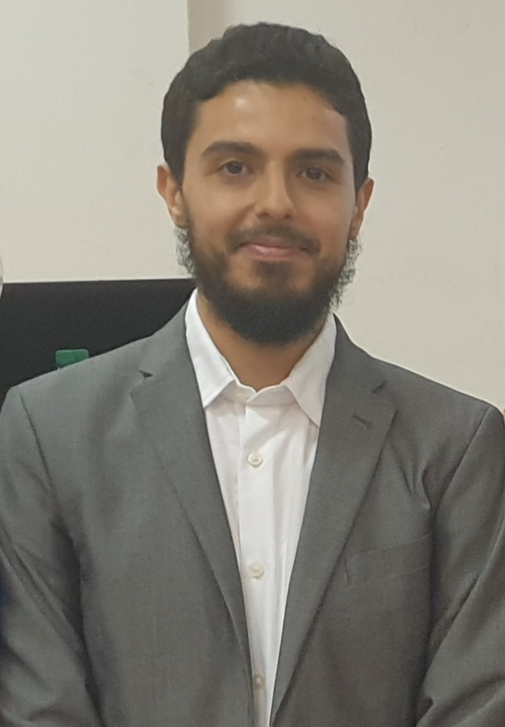

État civil

- Nom : Amnay El Amri
- Date de naissance : 16 avril 1995
- Lieu de naissance : Aït Aziza (Commune d’El Hammam, Khénifra)
- Situation familiale : marié à Dounia
- Contact : amnayelamri95@gmail.com | +212 659 258 168
Formation et diplômes
- Doctorat en Mathématiques (2022) – Université Hassan II, FS Ben M’sick, Casablanca. Mention Très honorable avec félicitations du jury. Sujet : Théorie du point fixe pour certaines classes de fonctions dans les espaces métriques et modulaires.
- Agrégation de Mathématiques (2022) – Candidat libre.
- Master de Topologie Algébrique (2017-2019) – FS Aïn Chock, Université Hassan II, Casablanca. Mention Bien – Major de promotion. Contenu du cursus : Topologie algébrique, algèbre homologique, géométrie différentielle, théorie des nœuds, homotopie rationnelle, géométrie algébrique et théorème de Bézout.
- Master 2 Analyse Fonctionnelle (2019-2020) – Université de Franche-Comté, Besançon. Mention Très Bien. Contenu du cursus : Espaces de Banach, bases de Schauder, convexité uniforme, algèbres de Banach et C*-algèbres, calcul fonctionnel, théorie spectrale des opérateurs compacts.
- Licence SMA (2016) – FS Ben M’sick, Université Hassan II, Casablanca.
- CPGE (2012-2014) – Lycée Champollion, Grenoble. Filières MPSI puis MP*.
- Baccalauréat Scientifique – Spécialité Mathématiques (2012) – Lycée La Résidence, Casablanca.
Expérience pédagogique
- 2023-2024 : Enseignant de Mathématiques au Lycée Léon L’Africain.
- 2023-2024 : Chargé de TD en Analyse (Semestre 1), Faculté des Sciences Aïn Chock.
- 2022-2023 : Soutien scolaire pour élèves de classes préparatoires et lycées.
- 2016-2022 : Cours particuliers pour étudiants en licence, classes préparatoires, lycée et collège.
Publications scientifiques
Articles publiés
- On some results on interpolative Kannan-type and CRR-type contractions, Moroccan Journal of Pure and Applied Analysis, Vol. 8(1), 2022 (avec Y. El Foutayeni et M. Marhrani).
- New Modular Fixed-Point Theorem in the Variable Exponent Spaces, Mathematics, 2022 (avec M.A. Khamsi).
- On common fixed points for Interpolative Kannan-type contractions in non-complete metric spaces, Mathematics, Vol. 10(6), 2023 (avec Y. El Foutayeni).
Articles soumis
- Interpolative Kannan-type and CRR-type contractions in rectangular metric space (soumis).
- A fixed point theorem in the Lebesgue spaces of variable integrability Lp(.) (soumis au Journal of Inequalities and Applications, avec M.A. Khamsi et O. Mendez).
Communications scientifiques
- Modèle mathématique de gestion de stock en pêcherie, JSI7, ENS Casablanca, 2019.
- Some results on interpolative Kannan and CRR-type contractions in non-complete metric spaces, Jano’13, 2021.
- Kannan contractions in modular spaces, ICRAMCS, 2022.
- Modular fixed point theorem in the variable exponent space Lp(.), Jano’14, 2023.
Activités parallèles
- Formation Go My Code (2023) : Data Science, Intelligence Artificielle et Machine Learning.
- Cours particuliers (2016-2022) : Préparation aux concours, soutien en mathématiques appliquées et fondamentales.
Compétences linguistiques
- Arabe : Langue maternelle
- Tamazight : Langue paternelle
- Français : Excellente maîtrise (oral et écrit)
- Anglais : Bonne maîtrise (oral et écrit)